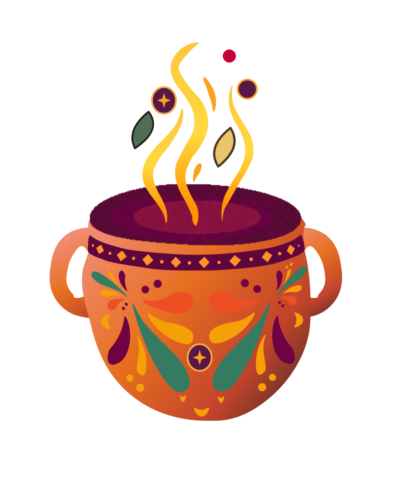
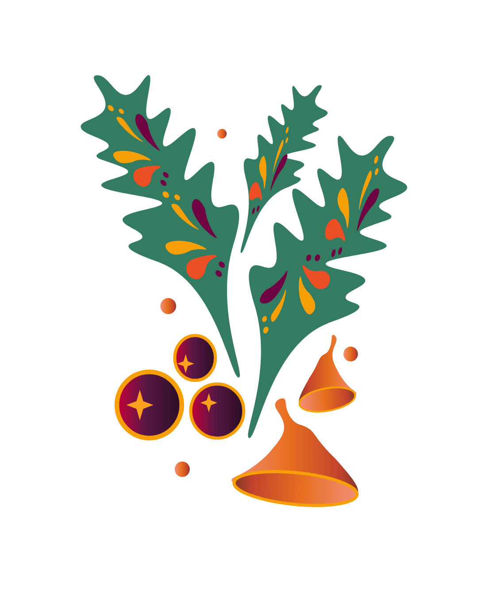
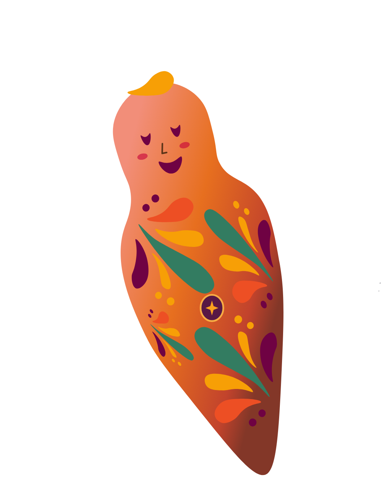
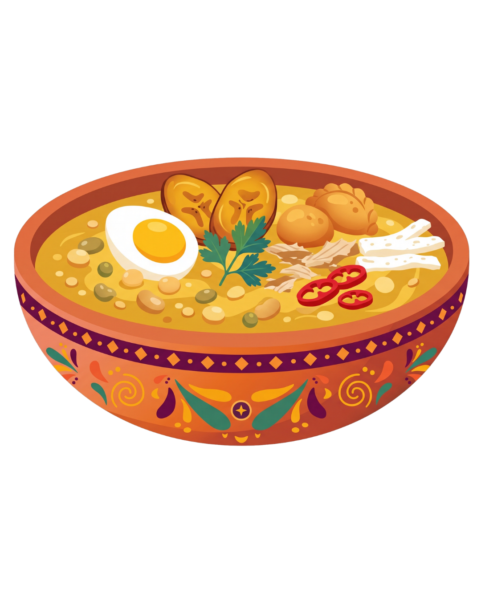
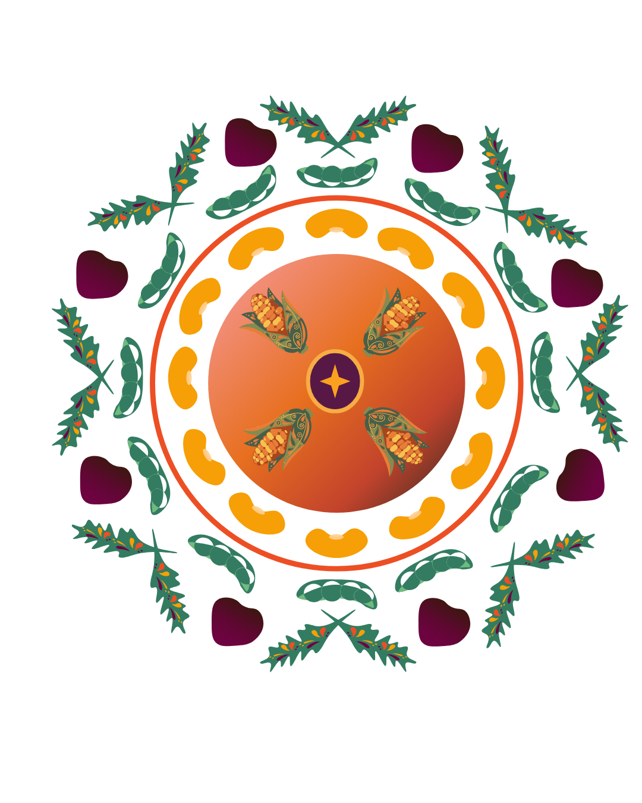
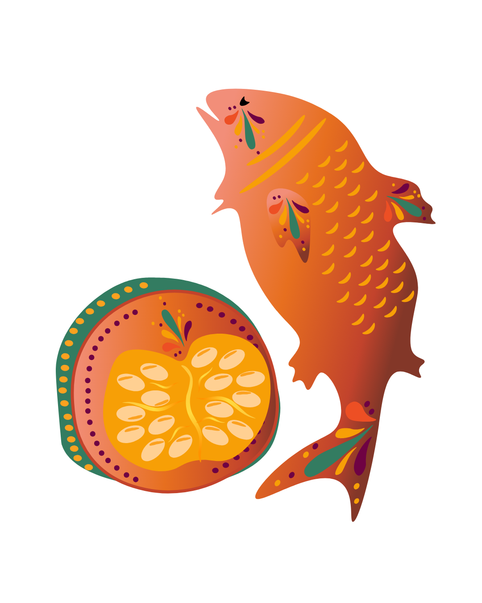
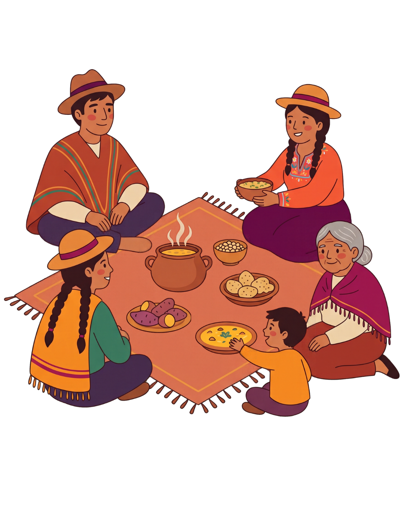
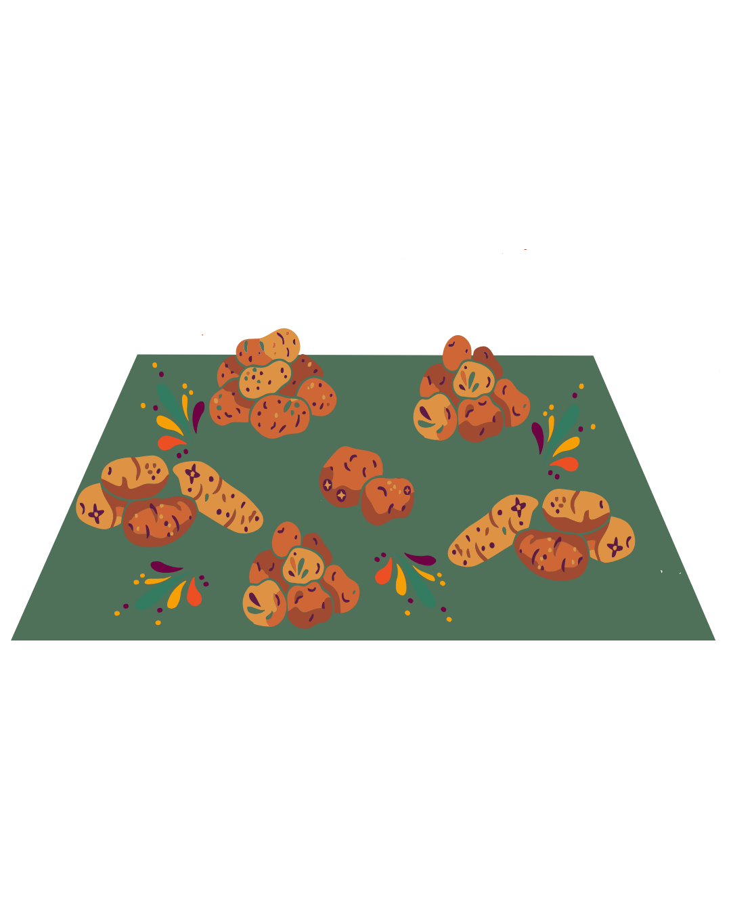
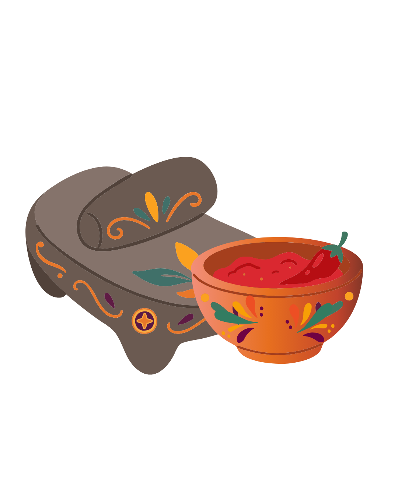

El Viaje a los Ancestros
Colada Morada y Guaguas de Pan: El culto mortuorio en el Aya Marcay Quilla.
La memoria detrás del ritual
¿Sabes por qué comes lo que comes en el feriado?

No comemos solo para nutrir el cuerpo: comemos para convocar a los que estuvieron antes. Explora las tres dimensiones rituales de nuestra memoria andina:
Mucho antes de que el calendario colonial designara noviembre como el Día de los Difuntos, los pueblos andinos consagraban este ciclo al Aya Marcay Quilla: el mes de cargar, alimentar y dialogar con los antepasados.
La muerte constituía una transición hacia el Uku Pacha (el mundo de las semillas y la memoria). En este ritual, el alimento operaba como el puente sagrado entre ambos mundos.

El tránsito ritual: de la ofrenda en las tumbas a la mesa familiar mestiza.

Fruto silvestre recolectado en las alturas del páramo. Su pigmento oscuro simboliza la sangre ritual y abre el umbral hacia el Uku Pacha.
Evolución mestiza de las figuras fúnebres de arcilla y maíz negro que representaban el cuerpo fardado de los difuntos para compartir la mesa.
Trazos decorativos que recuerdan los chumpis (fajas textiles) de protección andina y los lazos que mantienen atada la memoria espiritual.

El cuerpo incorruptible del ancestro en el banquete de difuntos.
«Cuentan los abuelos que en las noches frías de noviembre, la niebla baja de los páramos andinos trayendo consigo los pasos cansados de quienes ya partieron. En los tiempos antiguos no lloraban a sus muertos con lamento, sino con ofrendas: moldeaban figuras para darles cuerpo a sus recuerdos y hervían mortiños para brindar por la vida eterna. La leyenda dice que al compartir el pan frente a una taza caliente, el vapor abre un umbral invisible entre los dos mundos. No estás comiendo un dulce de panadería; estás prestando tu aliento para que tus ancestros sientan el calor de la tierra que dejaron atrás.»
En el mes de marzo, los pueblos originarios celebraban el equinoccio de primavera agradeciendo a la Pachamama por la maduración de los primeros frutos tiernos de la chacra andina.
Con la llegada colonial y la evangelización cuaresmal, este guiso sagrado de granos recién cosechados se amalgamó con la abstinencia católica, incorporando el pescado salado traído desde las costas.

Los doce granos: del equinoccio solar al símbolo de los doce apóstoles.

El grano sagrado del Inti. Representa la fertilidad solar y la base de la alimentación andina.
El vegetal puro purificado por el agua dulce. Fuerza vegetal contra el cansancio.
El tejido vegetal de las faldas volcánicas que aportan textura, cremosidad y resistencia.
La presencia marina que subía por rutas milenarias desde la costa pacífica hasta los Andes. Representa el pacto cristiano y la conservación ancestral mediante la sal.
La pulpa tierna dorada que unifica y emulsiona los doce granos en una textura continua: el vientre fértil de la tierra andina.

La unión de la Costa marina y la Sierra volcánica en un solo plato.
«En un ciclo de sequía donde la tierra parecía haber olvidado su fertilidad, los mayores de las comarcas se reunieron en lo alto del cerro. Cada comunero trajo consigo un puñado pequeño de lo único que le quedaba: unos llevaron granos de maíz, otros habas secas y otros calabazas de huerto. Al encender la leña y mezclar todo en una gran vasija de barro, descubrieron que el alimento de uno solo no saciaba el hambre, pero el puñado de todos creaba un banquete abundante. Así nació la lección: la abundancia no es acumular, sino saber mezclar en comunidad.»
Del kichwa Pampa (suelo llano) y el castellano Mesa. La pampamesa es la máxima expresión de la comensalidad andina: un banquete donde el suelo es el soporte y no existen jerarquías.
Se sostiene sobre dos principios ancestrales: el Ayni («hoy por ti, mañana por mí») y la Minga (el trabajo solidario en beneficio común).

Nadie preside la mesa: todos se sientan en círculo sobre la madre tierra.
Un mantel blanco o poncho largo tendido en hilera sobre la hierba. Elimina las cabeceras individuales: todos comen al mismo nivel visual y físico.
Papas cocidas con piel, habas tiernas, choclos y mellocos servidos en montículos continuos para ser tomados directamente con la mano.

El alimento se comparte sin cubiertos, estrechando lazos de hermandad.
En el centro del mantel se ubican recipientes de piedra o barro con ají molido y pepas de zambo, compartidos por toda la fila comunitaria.
Aportes especiales de las familias que complementan la base vegetal, sellando el pacto de apoyo mutuo para las futuras cosechas.

El condimento compartido que une las voluntades de la comunidad.
«"Aquí la única dueña legítima es la Pachamama; nosotros solo somos sus invitados por un rato". Así decía la mama grande cuando desenrollaba el poncho sobre la ladera después de la minga de riego. "En la mesa con patas hay quien se sienta arriba y quien queda al rincón; en la tierra redonda todos los ojos se encuentran a la misma altura". Al tomar la papa caliente con la mano y pasar el ají al compañero, la persona soberbia se cura y el tímido encuentra familia.»
Términos esenciales para comprender la cosmovisión y el ritual gastronómico:
Mes del calendario lunar andino (noviembre) consagrado al homenaje, abrigo y comunión con los ancestros.
Festividad equinoccial andina del florecimiento y maduración de los granos tiernos en el mes de marzo.
Principio de reciprocidad mutua: «hoy por ti, mañana por mí». Solidaridad viva entre familias.
Jornada comunitaria de trabajo solidario no remunerado en beneficio de todo el territorio.
El mundo subterráneo andino: morada de las semillas, los manantiales y los antepasados.
Cruz escalonada andina que representa la conexión cósmica entre los tres mundos y las cuatro direcciones.
Proyecto de Diseño Editorial Interactivo y Divulgación del Patrimonio Inmaterial